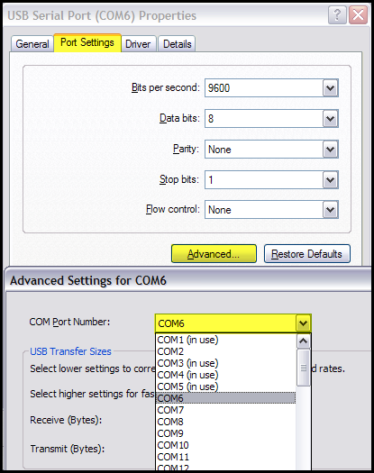

Table of Contents
Frequently Asked Questions
Here you will find some answers for the frequently asked questions. If you can't find any answers of your problem try to read the help subject in FreeStyler. If you still have some issues/questions, ask them at the Freestyler support forum
Interfaces
Q: When I start up FreeStyler, I get the message "Error creating output thread" and I can't control my lights
A: “output thread” error comes when FreeStyler can't find the USB interface. Make sure you have selected the right interface in FreeStyler Setup and chosen the right COM-port. If you don't know which COM-port your interface is connected to, open the Device Manger and check it. Set the right COM-port in FreeStyler Setup and restart the program.
To check or change the COM-port associated with your interface follow this procedure.
Windows XP
- Open Control Panel.
- If Control Panel is in Category view then click the “Switch to Classic View” link in the left column.
- Double click the “System” icon.
- Click the “Hardware” tab.
- Click the “Device Manager” button.
- Scroll down list and locate the “Ports (COM & LPT)” category, expand it by clicking the associated “+” sign.
- You should see a “USB Serial Port (COMn)”.
- Double click the entry or right click and select “Properties”.
- If it is an Enttec Pro then the Manufacturer on the “General” tab should be FTDI.
- Click the “Port Settings” tab.
- Click the “Advanced…” button.
- You will now see a dialogue which allows you to change the port associated to this device via a drop down list.
- See highlighted areas:
 - If you have made changes then click the “OK” button otherwise press the “Cancel” button.
- Close all other open windows.
- Restart FreeStyler and go to the menu Setup>FreeStyler Setup>Controller to select your interface and select the correct COM Port.
- Save your settings.
- Exit FreeStyler.
- Connect interface.
- Restart FreeStyler.
All should be now working.
Windows Vista
(I will do a version soon)
Windows 7 / 8 / 10
(still has to be added)
FreeStyler Functions
Q: The blue ball in the position window is not moving around when using Bezier Shapes, is this a bug?
A: This is not a bug. In the latest versions the blue ball don't move.
Q: I can see a blue triangle mark (!-sign) next to the fixtures, What is this?
{kind=link}
A: This icon indicates that a manual override is active, click on it to disable the manual override.
Learn more about this at: The Override systems in freestyler or the Blue triangle
Magic 3D Easy View
Q: I can't open the Magic 3D Easy View from FreeStyler. The "3D" icon is grey. What is wrong?
A: Magic 3D Easy View is either not installed or not installed in the FreeStyler folder.
When you install FreeStyler make sure you set the check mark at “Sunlite Magic 3D Easy View”, otherwise Magic 3D Easy View does not get installed.
If you forgot to set the checkmark run the install again, click that check mark and make sure you have not set the check marks for “Overwite all fixture profiles” and “Reset all settings to default”. This way nothing will happen with your fixtures and setting. Only the “3D” button would be clickable in FreeStyler.

Q: When I run the 3D program and find my lights, I have found that the 3D program has lights that FreeStyler does not. Can I transfer the files over to use in FreeStyler?
A: Sorry you cannot do that. FreeStyler fixtures are not compatible with the visualiser and vice-versa. Same would apply if you was using Capture or WYSIWYG visualisers, so you need two types of fixture file to be created, one for the control program (FreeStyler) and one for the visualiser.
So you need to use the FixtureCreator to create you fixture file for FreeStyler if it don't exist. also, it is a good idea to check that the fixtures in the visualizer and FreeStyler is identical (use different attributes on the same DMX channels).
Q: I can't get any of the fixtures in Magic 3D Easy View to respond when using FreeStyler
A1: FreeStyler may not send out DMX:
Make sure you have selected your real interface or the “Virtual Interface” in the FreeStyler setup:
[Setup>FreeStyler Setup>Interface Setup>Controller].
If you did not do that FreeStyler will not send out any DMX data to Magic 3D Easy View.
A2: You have not opened/started the Magic 3D Easy View program from FreeStyler:
Press the “3D” button in the FreeStyler toolbar to start the Magic 3D Easy View program.
If you have opened the program by not using the “3D” icon on the FreeStyler toolbar then FreeStyler is not connected the Magic 3D Easy View.